| Название | Вид | Функционал |
|---|---|---|
| 1. Alignment |  |
Помогает выравнивать фрагменты кода. |
| 2. AngularJS | --- | Если вы используете Angular для своих проектов, этот пакет сильно упростит вам жизнь в паре с плагином SublimeCodeIntel, так как SublimeCodeIntel не может автоматически заполнять имена модулей и контроллеров Angular с атрибутами ng-***.
С помощью этого пакета можно автоматически заполнять переменные модулей, контроллеров, фабрик и сервисов командой Rebuilt Search Index. Плагин также позволяет заполнять все атрибуты Angular, которые начинаются с ng-*** и фрагментов встроенных функций Angular JS, таких как $http и $filter. |
| 3. Auto Semi-Colon |  |
AutoSemiColon автоматически завершает строки в CSS и JavaScript файлах точкой с запятой ( ; ). Если вы не хотите получать ошибку при компиляции и сжатии js-файлов и, что более важно, писать чистый код, стоит воспользоваться этим пакетом. |
| 4. AutoFileName |  |
AutoFileName помогает быстрее писать имена переменных и функций, подсказывая названия во всплывающем окне и автоматически заполняя названия. |
| 5. ApacheConf.tmLanguage |  |
Выделяет синтаксис для файлов конфигурации Apache (.htaccess). |
| 6. BracketHighlighter |  |
Этот плагин просто подчеркивает скобки. Когда курсор находится между кавычками, фигурными скобками, круглыми скобками, плагин отмечает начало и конец этой части. При написании вложенных функций этот пакет поможет вам увидеть, в каком блоке вы находитесь сейчас./td> |
| 7. Case Conversion | 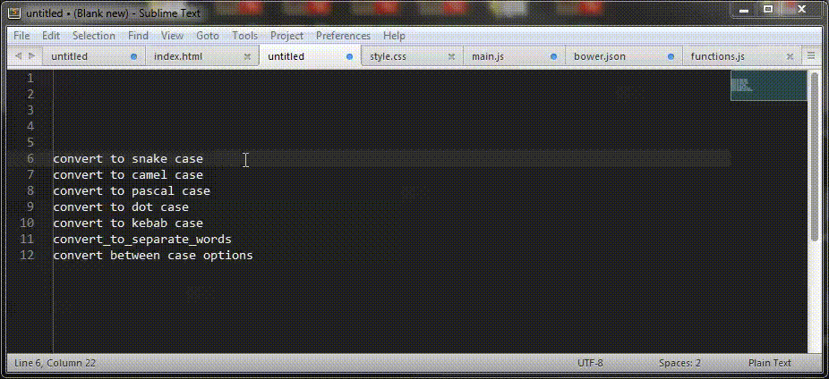 | Все мы используем различные методы именования переменных, особенно, если пишем на паре (или больше) языков: PascalCaseMethod, camelCaseMethod, snake_case_method и kabab-case-method. С пакетом Case Conversion можно передавать различные методы именования с помощью одной горячей клавиши |
| 8. Color Highlighter | 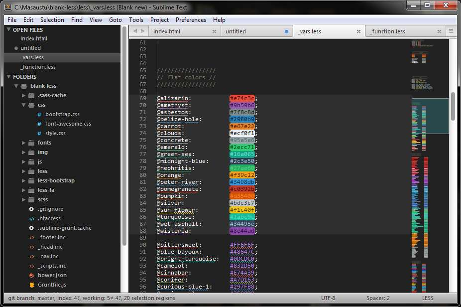 | ColorHighlighter выделяет значения цвета. Он поддерживает hex, rgb, rgba, hsl, hsla, а также выделяет цветовые переменные Less и Sass. |
| 9. Console Wrap for JS | 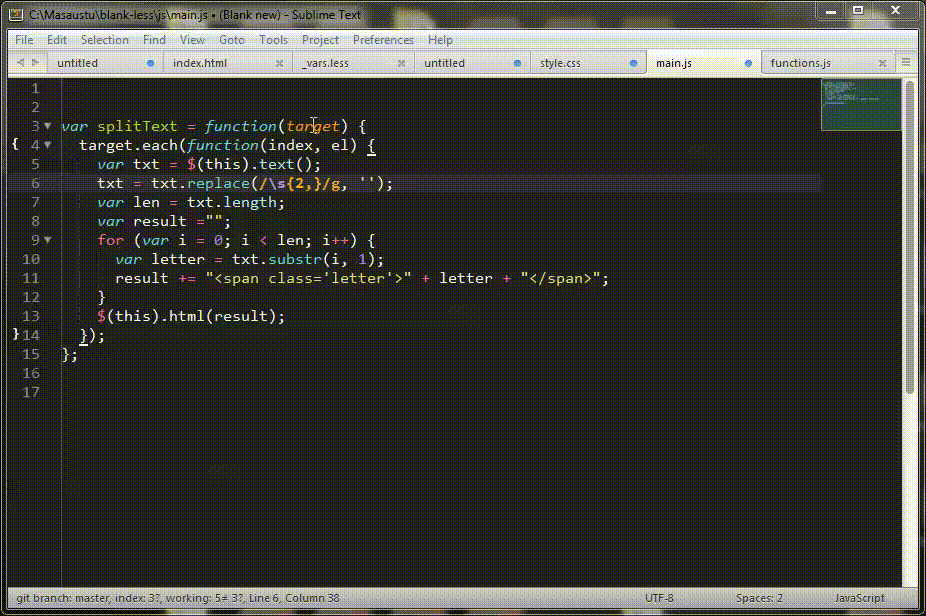 | Один из самых недооцененных пакетов для JavaScript-разработчиков. Он позволяет с помощью горячих клавиш добавить выделенную переменную в console.log() строкой ниже. |
| 10. CSS Extended Completions | 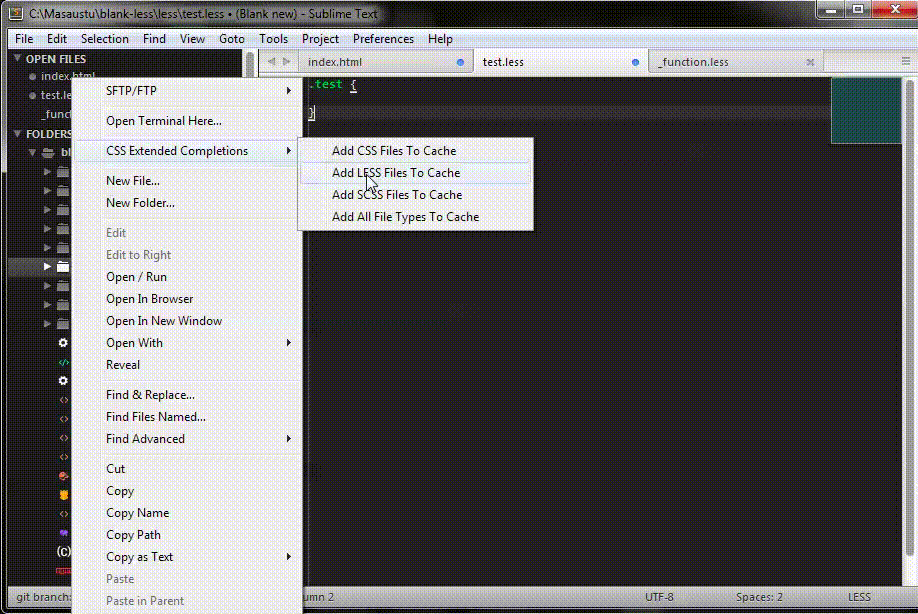 | Данный плагин индексирует ваши .css, .less, .scss и .sass файлы, кэширует названия миксинов, переменных, классов и id и автоматически дополняет их при написании, как в html, так и в файлах стилей. Плагин также умеет индексировать файлы по заранее заданному пути при запуске Sublime Text. |
| 11. DocBlockr | 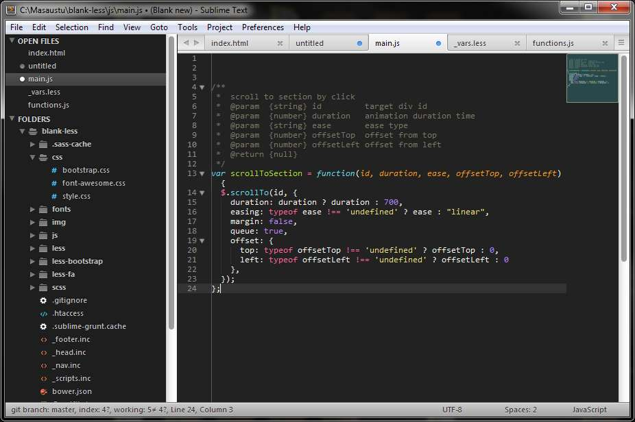 | DocBlockr упрощает процесс документирования функций и блоков кода, автоматически создает отметки для аргументов функций, типов переменных и описаний. |
| 12. Emmet | --- | Emmet позволяет использовать сокращения для быстрого написания кода. Например название html-элемента + tab создаст готовый блок, а просто написанный класс, вроде .container + tab превратится в <div class=«container»></div> |
| 13. Grunt | 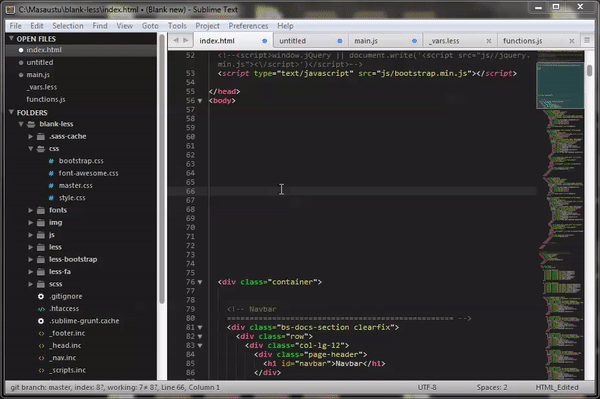 | Этот пакет позволяет запускать команды Grunt в Sublime Text без окна терминала. |
| 14. HTML Nest Comments | 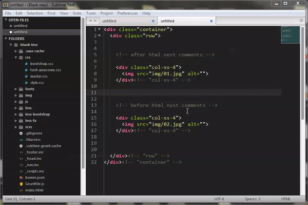 | Sublime Text не умеет распознавать выделенный закомментированный html код. Этот плагин позволяет заключать в комментарии уже закомментированные строки html-кода. |
| 15. Inc-Dec-Value | 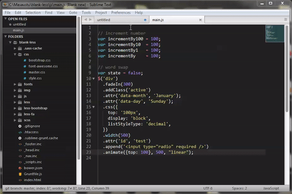 | Inc-Dec-Value позволяет изменять числа, увеличивая и уменьшая их с шагом в 0.1, 1, 10, 100. Он также умеет преобразовывать друг в друга цветовые форматы hex, rgb, rgba, hsl, hsla. Еще одна важная особенность Inc-Dec-Value, возможность оперировать заранее заданными смысловыми значениями. Например, с помощью этого плагина в коде мы можем одним движением заменять true на false, fadeIn на fadeOut, next на prev и так далее. |
| 16. jQuery | 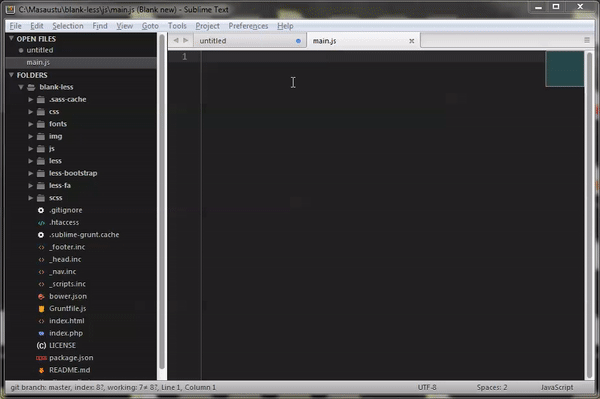 | JQuery остается одной из самых популярных js-библиотек, поэтому, если вы используете ее в работе, этот плагин вам пригодится. Он помогает использовать сокращения и автодополнение, чтобы писать jQuery-функции быстрее. |
| 17. LESS | 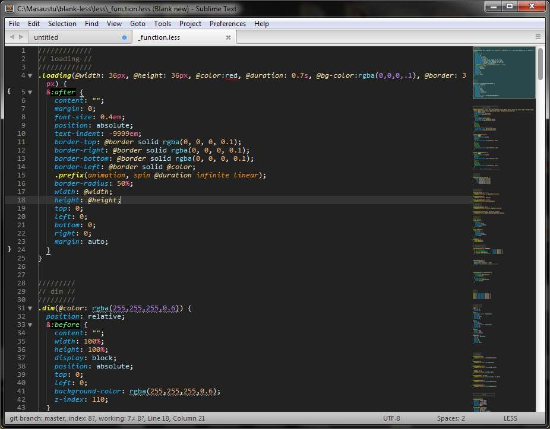 | Этот пакет добавляет функцию подсветки синтаксиса в .less-файлы. Он также автоматически дополняет встроенные функции Less, такие, как fadein, darken, desaturate, data-uri. |
| 18. RegReplace | 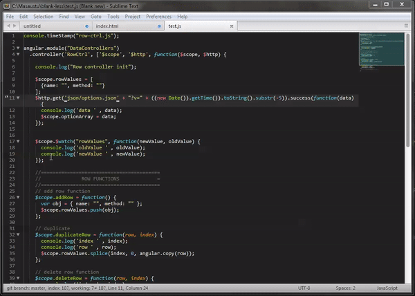 | Этот плагин позволяет оперировать заранее заданными регулярными выражениями. Он так же имеет несколько встроенных выражений, например, для удаления html-комментариев или лишних пробелов. Он позволяет задавать и собственные регулярные выражения – к примеру, можно создать выражение, которое будет комментировать или убирать комментарии с console.log() в JavaScript-файлах. |
| 19. SASS | 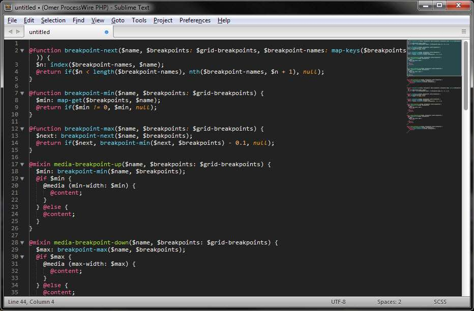 | Этот пакет добавляет функцию выделения синтаксиса в .scss и .sass файлах, а также дополняет встроенные в Sass функции, такие, как @mixin, @include и @if @else. |
| 20. StyleToken | 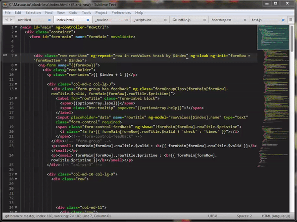 | Этот плагин позволяет задавать различную подсветку для различных элементов для упрощения чтения кода. |
| 21. SublimeLinter | 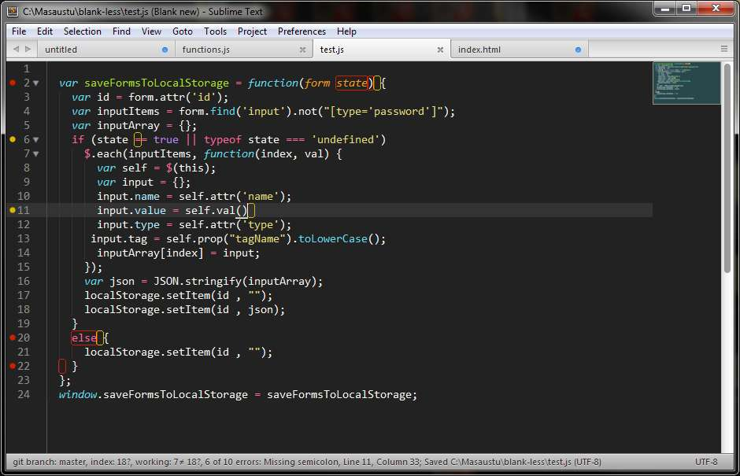 | Помогает находить синтаксические ошибки в коде подсвечивая их. На данный момент поддерживаются PHP, Javascript, Java, CSS, HTML, HAML, Python, Ruby, Json, CoffeeScript, Google Closure, XML, React.js, Slim, Markdown, Go, Perl, C, C++, SQL, Twig, Bootstrap, Jade, LESS, SASS. |
| 22. SwapStrings | 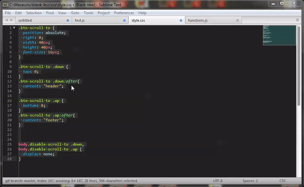 | Предположим, вы запутались в переменных и случайно написали переменную up, там где должны были указать down и наоборот. Каким будет самый быстрый способ исправить положение? К примеру, можно заменить up на какое-то уникальное выражение, вроде «sdasdasdfk», а все вхождения down заменить на up. Затем пройти еще раз и заменить уникальное выражение «sdasdasdfk» на down.
SwapStrings позволяет просто поменять местами два слова, также он умеет заменять двойные кавычки на одинарные, а одинарные на двойные, как на ограниченной части текста, так и во всем документе. |